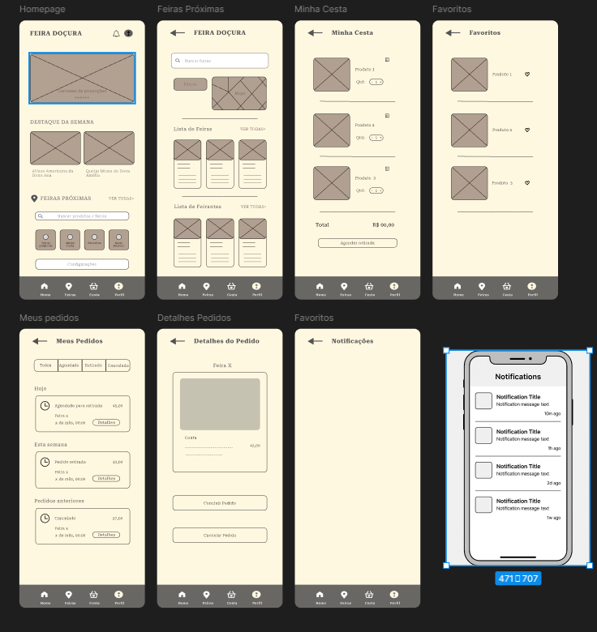

Estudo de Caso – App Feira Doçura
Objetivo: Facilitar a conexão entre feirantes e consumidores locais, promovendo o comércio justo, produtos frescos e a economia local.
1. Identificação do Problema
Consumidores têm dificuldade para encontrar informações claras e atualizadas sobre feiras livres, como localização, horário e produtos disponíveis. Isso torna a experiência inconveniente e imprevisível. Ao mesmo tempo, feirantes enfrentam baixa visibilidade e falta de ferramentas digitais para organizar pedidos ou divulgar suas bancas, o que impacta diretamente suas vendas.
2. Pesquisa com Usuários
Realizei formulários com consumidores e feirantes. Descobertas principais:
- 80% não sabem onde encontrar feiras novas
- 70% gostariam de fazer pedidos antecipados
- 90% dos feirantes nunca usaram um app, mas se interessariam em um gratuito
3. Persona
4. Jornada do Usuário
5. Wireframes
6. Protótipo Interativo
Para acessar o protótipo, clique no botão abaixo:
7. Testes de Usabilidade
FUTURO
8. Aprendizados
FUTURO
← Voltar para o portfólio